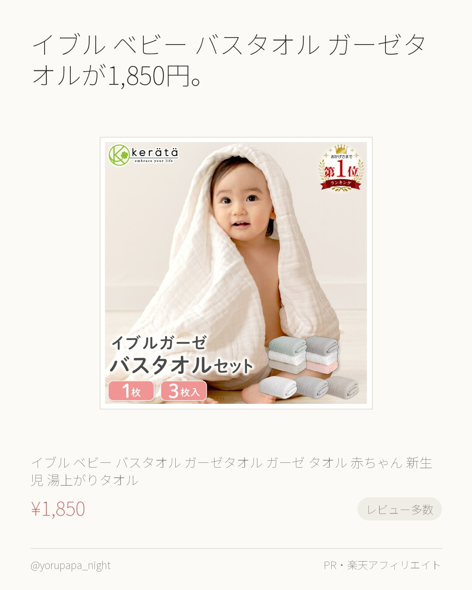
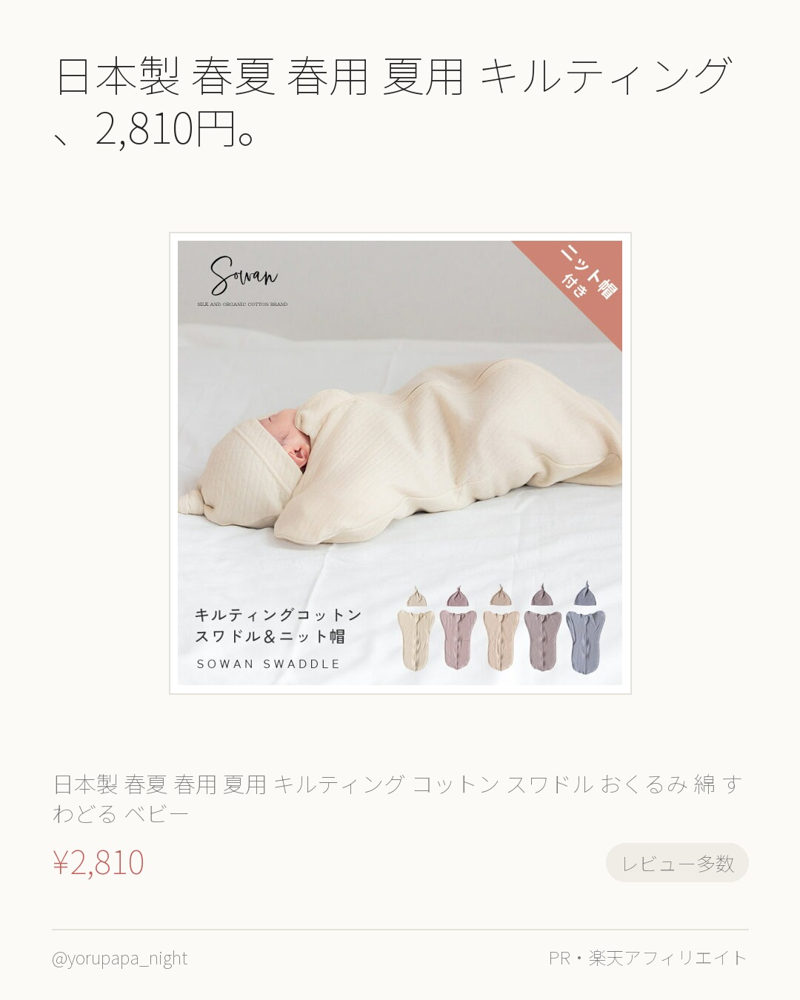
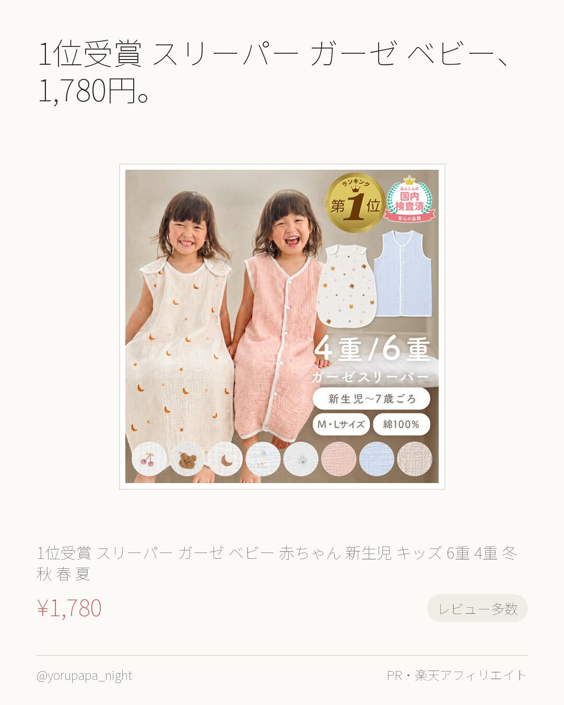
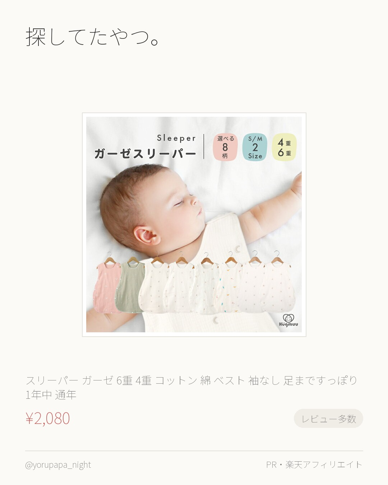
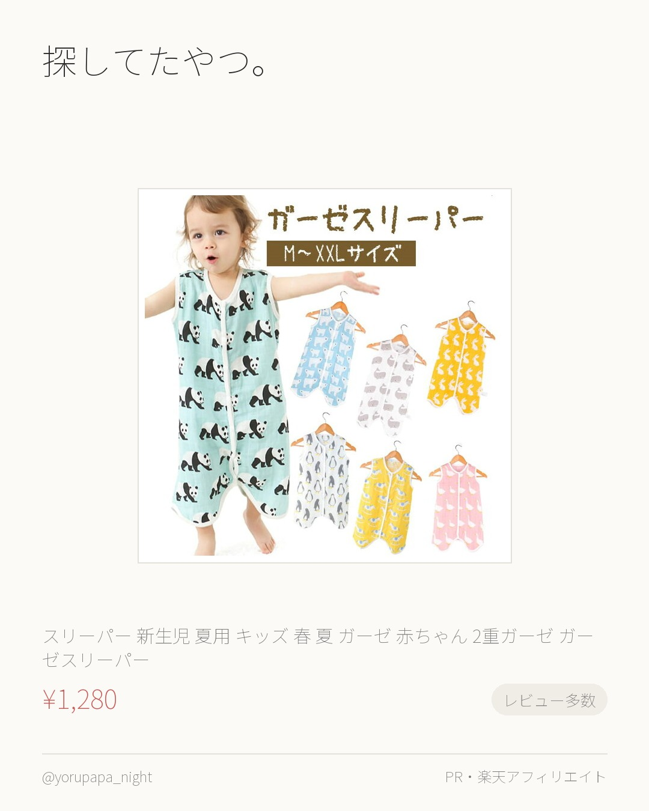
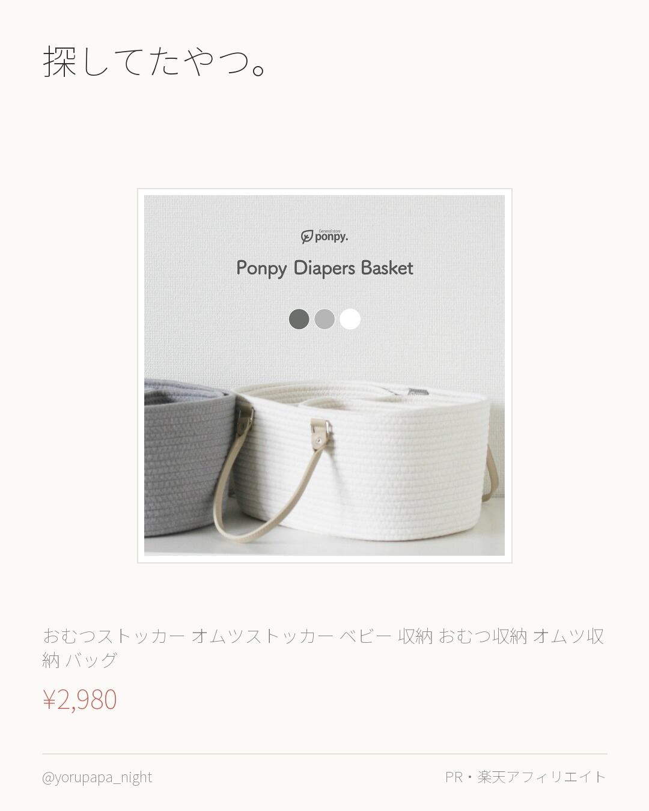
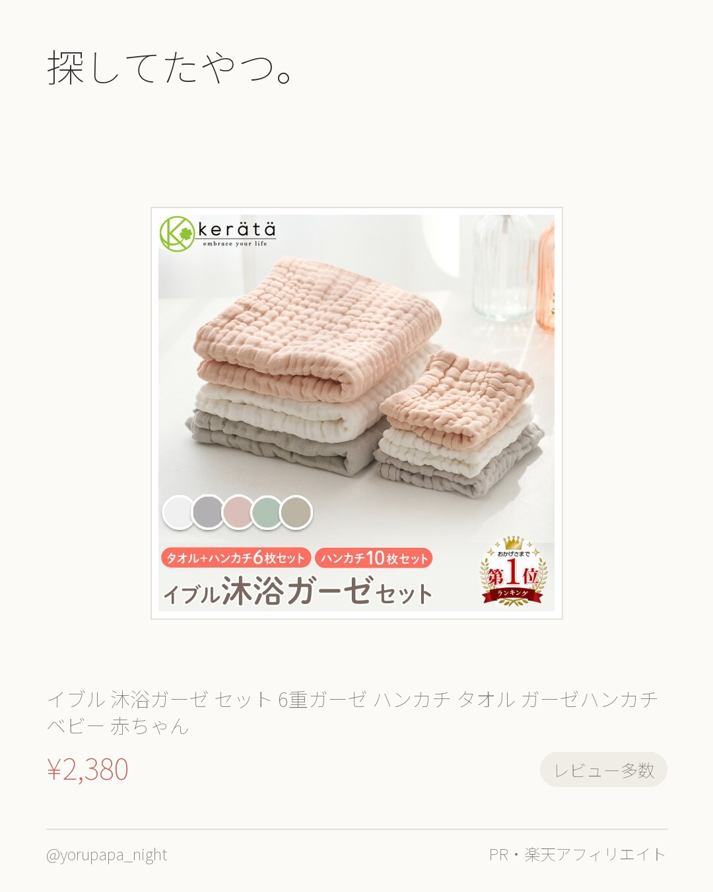
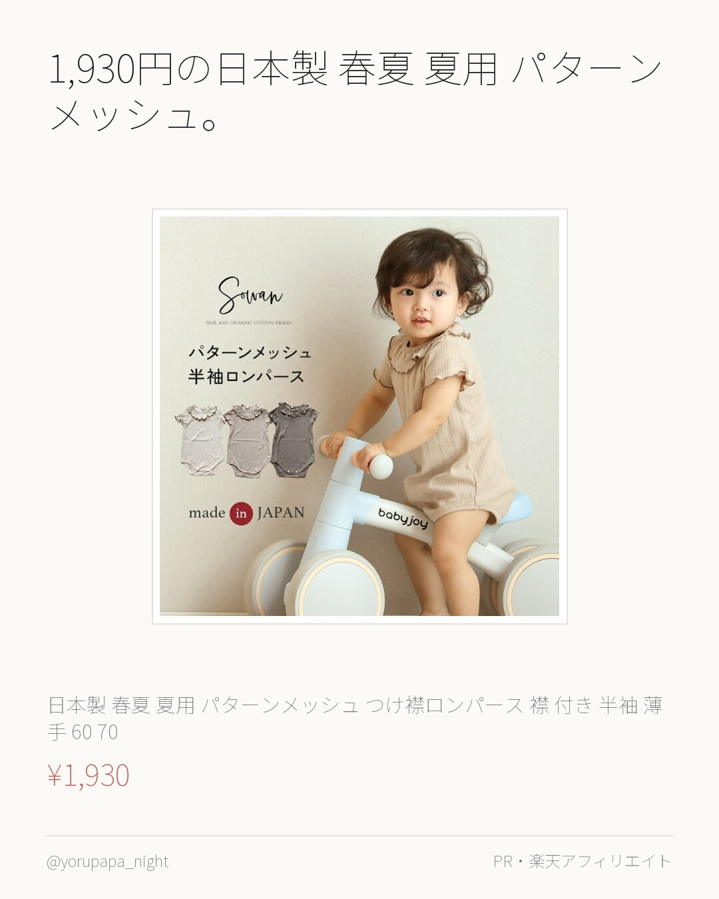
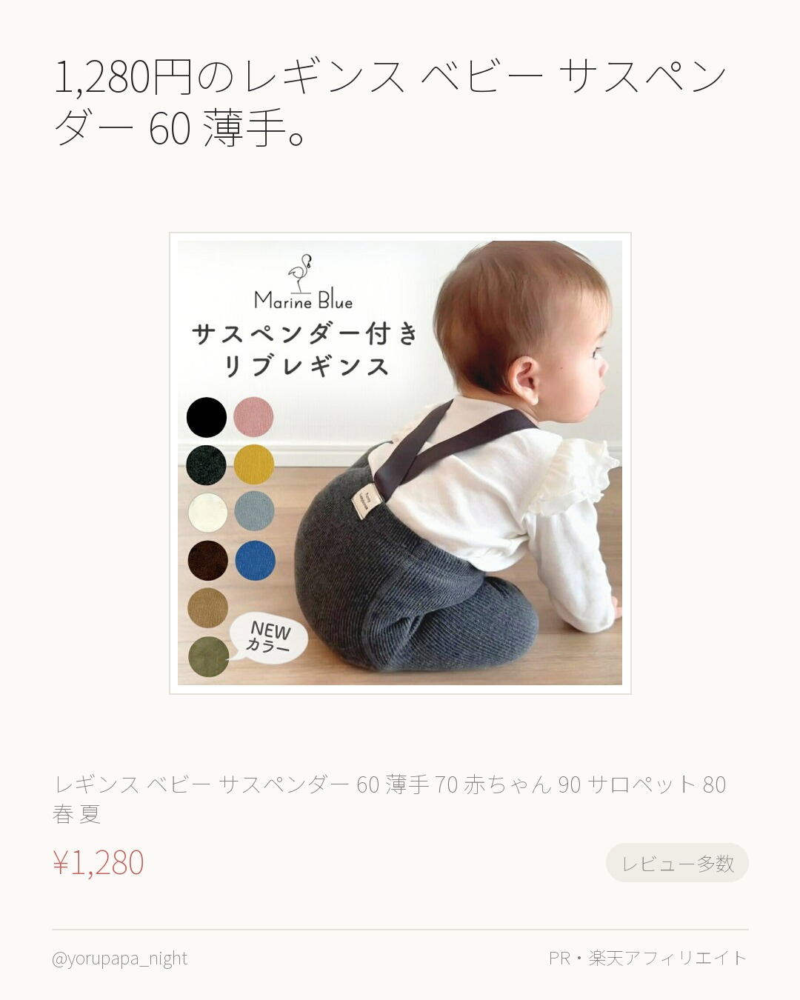
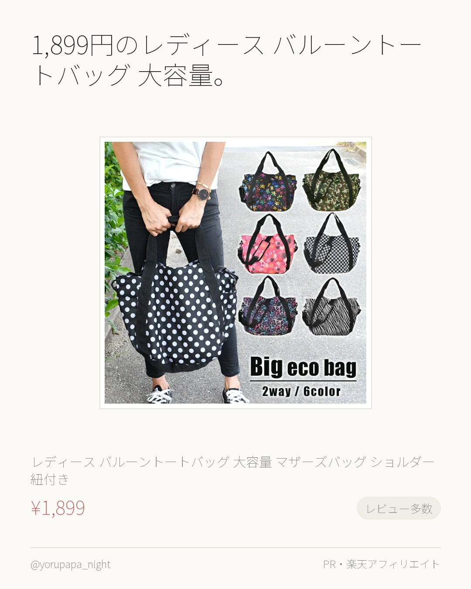

イブル ベビー バスタオル ガーゼタオルが1,850円。レビュー6,686件で4.71なのが決め手でした。気になってた人はぜひ。
【楽天1位】(ケラッタ) イブル ベビー バスタオル ガーゼタオル ガーゼ タオル 赤ちゃん 新生児 湯上がりタオル おくるみ くすみカラー
¥1,850
楽天市場で見るよるぱぱ｜日中は会社員、夜と休日は育児担当。実際に使ったものだけ。
これまでの投稿をぜんぶ見る → 楽天ROOM／よるぱぱ
イブル ベビー バスタオル ガーゼタオルが1,850円。レビュー6,686件で4.71なのが決め手でした。気になってた人はぜひ。
【楽天1位】(ケラッタ) イブル ベビー バスタオル ガーゼタオル ガーゼ タオル 赤ちゃん 新生児 湯上がりタオル おくるみ くすみカラー
¥1,850
楽天市場で見る
日本製 春夏 春用 夏用 キルティング、2,810円。レビュー1,961件で4.65なのが決め手でした。色違いも見てみてください。
【帽子付き】日本製 春夏 春用 夏用 キルティング コットン スワドル おくるみ 綿100％ すわどる ベビー 赤ちゃん あかちゃん オール
¥2,810
楽天市場で見る
1位受賞 スリーパー ガーゼ ベビー、1,780円。レビュー2,423件で4.61なのが決め手でした。気になってた人はぜひ。
1位受賞 スリーパー ガーゼ ベビー 赤ちゃん 新生児 キッズ 6重 4重 ガーゼ 冬 秋 春 夏 6層 綿 前開き コットン 大きいサイズ
¥1,780
楽天市場で見る
探してたやつ。スリーパー ガーゼ 6重 4重 コットン。レビュー1,679件で4.61なのが決め手でした。色違いも見てみてください。
【楽天ランキング6冠】 スリーパー ガーゼ 6重 4重 コットン 綿 ベスト 袖なし 足まですっぽり 1年中 通年 かわいい 月 星 雲 さ
¥2,080
楽天市場で見る
探してたやつ。スリーパー 新生児 夏用 キッズ 春 夏。レビュー1,252件で4.56なのが決め手でした。使い回しが効きそう。
スリーパー 新生児 夏用 キッズ 春 夏 ガーゼ 赤ちゃん 2重ガーゼ ガーゼスリーパー ベビー 春夏 袖なし ベスト スワドル 二重ガーゼ
¥1,280
楽天市場で見る
探してたやつ。おむつストッカー オムツストッカー ベビー。レビュー525件で4.62なのが決め手でした。色違いも見てみてください。
おむつストッカー オムツストッカー ベビー 収納 おむつ収納 オムツ収納 おむつ収納 バッグ おしゃれ収納 出産祝い ロープバスケット po
¥2,980
楽天市場で見る
探してたやつ。イブル 沐浴ガーゼ セット 6重ガーゼ。レビュー1,024件で4.72なのが決め手でした。使い回しが効きそう。
(ケラッタ) イブル 沐浴ガーゼ セット 6重ガーゼ ハンカチ タオル ガーゼハンカチ ベビー 赤ちゃん 新生児 出産祝い 沐浴布 幼稚園
¥2,380
楽天市場で見る
1,930円の日本製 春夏 夏用 パターンメッシュ。レビュー4.76（394件）なのが決め手でした。色違いも見てみてください。
日本製 春夏 夏用 パターンメッシュ つけ襟ロンパース 襟 付き 半袖 薄手 60 70 80 90 肌着 保育園着 幼稚園 入園 通園 子
¥1,930
楽天市場で見る
1,280円のレギンス ベビー サスペンダー 60 薄手。レビュー2,652件で4.64なのが決め手でした。使い回しが効きそう。
レギンス ベビー サスペンダー 60 薄手 70 赤ちゃん 90 サロペット 80 春 夏 キッズ 保育園 子供 子供服 ベビーレギンス ベ
¥1,280
楽天市場で見る
1,899円のレディース バルーントートバッグ 大容量。レビュー1,069件で4.54なのが決め手でした。気になってた人はぜひ。
【送料無料】レディース バルーントートバッグ 大容量 マザーズバッグ ショルダー紐付き ショルダーバッグ マザーズ バッグ 2way エコバ
¥1,899
楽天市場で見る